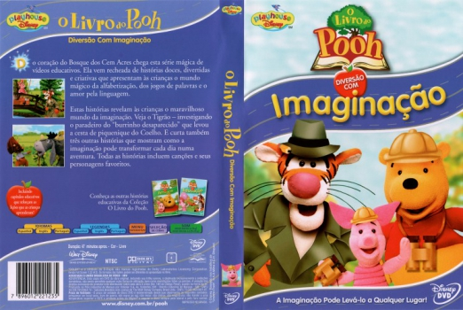

Outro Título:The Book Of Pooh – Fun With Imagination
País:United States, 47 minutos
Idiomas falados:Inglês, Português
Gênero(s):Animação, Família
Diretor(s):Dean Gordon, Mitchell Kriegman, Jon Ludwig, Bruce Logan, Tom Guadarrama
Escritor(es):Claudia Silver, Pippin Parker, Jymn Magon, Mark Zaslove, Mitchell Kriegman
Codec:MPEG-2 (DVD)
Número: 5852


Certificado:
Sinopse:
Uma nova versão da Disney das histórias infantis clássicas sobre o Ursinho Pooh e seus amigos. Em vez das versões animadas do passado, esta série é inteiramente feita em formato de marionete
Elenco:


Tipo de mídia: DVD5,
Legendas: Português, Sem Legendas
Alugado: Não
Tela: Anamorphic Widescreen